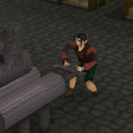
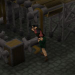

")
Smithing - Blast Furnace
Introduction | Location | Requirements | Recommended Items | Traders | Smelting Ore | Development Team
The Blast Furnace is only accessible to RuneScape members. Please subscribe to get this feature.
Please note this is a 'Safe' task. There is nothing to kill you here, unless you are poisoned.
Introduction

Location

One of the ways to travel there is for free via the mine carts in the Dwarven Mines.
Requirements
You will need to have started The Giant Dwarf quest to gain access to the dwarven city of Keldagrim.
The following roles will need to be filled in order to power the furnace, and a group of at least five players is recommended. It is also a good idea to swap roles from time to time so that everybody can gain experience from the different skills.

This person will need to use their spade with the coke holder and then click on the 'Refuel Stove' button.

Good communication is needed here as this person must take instruction from the temperature gauge reader, as if the furnace overheats the person pumping the air will take damage. A small amount of food is recommended for the person filling this role.


This person will need a hammer so that they can fix all broken parts such as pipes and the conveyor belt.
Someone to watch the temperature gauge and tell the person who is pumping to start and stop, so that the furnace does not overheat. There is no skill requirement for this role. The white part of the gauge means that the furnace is too cold and needs more pumping. The green means the temperature is just right; the red means that the furnace is too hot. The temperature gauge will also alert the gauge reader to when the furnace has a broken part.

While the furnace is in use, all the workers will gain experience in their respective skills (such as Agility experience while powering the conveyor belt) as well as Smithing to all involved.

Recommended Items
This furnace is the most efficient ore-processing machine in RuneScape, but it requires a lot of attention and hard work in order for it to refine the ores. Recommended items to take are:
- Food
Only a small amount is needed for the less confident player, used in case of damage from the furnace air pump.
- Hammer
Spawns at the back of the room.
- Spade
Spawns by the coke bin.
- Bucket
Spawns next to the sink.
- Gold pieces
For use of the anvils and to buy ores.
- Ores (noted)
Ordan can convert any noted ores into proper ores for use in the task, so you can simply carry a stack of ore notes to use in the Blast Furnace. Note that he will only un-note ores that he normally sells.
- Pickaxe
If you wish to mine your own ores in a nearby location.
Traders
There are two dwarf traders that can be found near the furnace. They are:
Ordan the ore salesman - sells every ore up to mithril, as well as un-noting the same ores.
Jorzik the armour salesman - sells all types of armour from mithril up to rune. However, these items are only supplied by players.
Smelting Ore

After you have put your ore onto the conveyor belt, you will see them move along it until they drop into the furnace. Don't worry, you will not lose your ore if you log out, and other players cannot pick it up.
After a while you will see the bar mould on the bar dispenser fill up and glow orange. To cool down your bars, use a bucket of water on them.
If you wish to smith your bars here, then you can use the anvils in area located to the north-west of the furnace. These anvils require level 60 Smithing or higher.
Development Team
Developer: John A
Graphics: Tony A-V
QA: Adam D
Audio: Ian T

More articles in
Smithing
|
|
|
Further Help
If this article does not help you, you may find the following sections of the RuneScape site helpful:
|
|